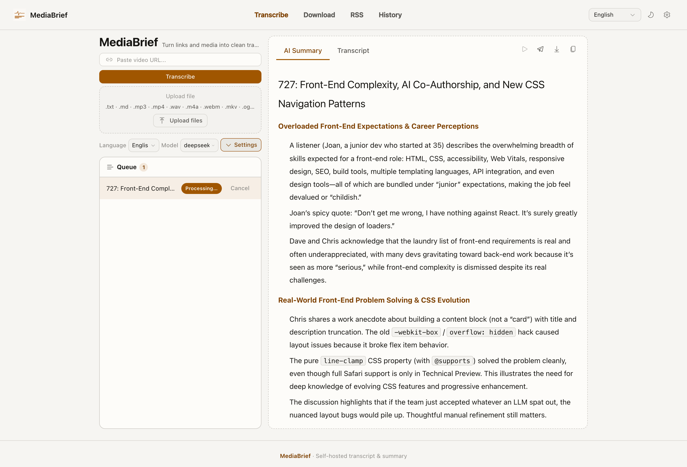

MediaBrief turns video links into readable transcripts and AI summaries.
Paste a YouTube, Bilibili, or podcast link, or drop a local file. The Mac app pulls captions when they exist, transcribes locally when they do not, then writes a summary. No account.

MediaBrief 把视频链接变成可读转录和 AI 摘要。
粘贴 YouTube、Bilibili 或播客链接，或拖入本地文件。有字幕就先用字幕，没有就在本地转录，然后生成摘要。不用注册。
MediaBrief は動画リンクを文字起こしと AI 要約にします。
YouTube、Bilibili、ポッドキャストのリンクを貼るか、ローカルファイルをドロップします。字幕があればそれを使い、なければ Mac 上で文字起こしし、要約を出します。アカウントは不要です。
MediaBrief는 영상 링크를 전사본과 AI 요약으로 바꿉니다.
YouTube, Bilibili, 팟캐스트 링크를 붙이거나 로컬 파일을 넣으면 됩니다. 자막이 있으면 자막을 쓰고, 없으면 Mac에서 전사한 뒤 요약을 만듭니다. 계정은 없습니다.
How it works
它做什么
できること
하는 일
- Subtitles first. Existing captions are used without downloading audio.
- Local transcription with mlx-whisper when captions are missing.
- The summary appears while the full transcript is still being cleaned up.
- History stays on this Mac. RSS, export, and optional bots are included.
- 先用字幕。有现成字幕时不下载音频。
- 没有字幕时用本机 mlx-whisper 转录。
- 摘要先出来，全文还在后台整理。
- 历史留在这台 Mac 上。RSS、导出和可选 Bot 都在应用里。
- 字幕優先。既存の字幕があれば音声をダウンロードしません。
- 字幕がない場合は本機の mlx-whisper で文字起こしします。
- 要約が先に出ます。全文の整理は裏で続きます。
- 履歴はこの Mac に残ります。RSS、書き出し、任意のボットもあります。
- 자막 우선. 있는 자막은 오디오를 받지 않고 사용합니다.
- 자막이 없으면 이 Mac의 mlx-whisper로 전사합니다.
- 요약이 먼저 나오고, 전문 정리는 백그라운드에서 이어집니다.
- 기록은 이 Mac에 남습니다. RSS, 보내기, 선택적 봇이 포함됩니다.
Install
安装
インストール
설치
Download the DMG, drag MediaBrief into Applications, then open it. First launch prepares the default transcription model in the background (about 1.6 GB). You do not install Python, FFmpeg, or Deno yourself.
下载 DMG，把 MediaBrief 拖进应用程序，然后打开。第一次启动会在后台准备默认转录模型（大约 1.6 GB）。不用自己装 Python、FFmpeg 或 Deno。
DMG をダウンロードし、MediaBrief をアプリケーションにドラッグして開きます。初回起動時に既定の文字起こしモデル（約 1.6 GB）をバックグラウンドで用意します。Python、FFmpeg、Deno を自分で入れる必要はありません。
DMG를 받아 MediaBrief를 응용 프로그램으로 끌어다 연 뒤 실행하세요. 첫 실행 때 기본 전사 모델(약 1.6 GB)을 백그라운드에서 준비합니다. Python, FFmpeg, Deno를 직접 설치할 필요는 없습니다.
Updates
更新
更新
업데이트
There is no silent updater. In the app, Check for Updates opens this page. Download a new DMG when you want a newer build. yt-dlp inside the app still refreshes itself on a weekly schedule.
没有静默更新。应用里的「检查更新」会打开这一页。想换新版本就下载新的 DMG。应用内的 yt-dlp 仍会按周自行刷新。
サイレント更新はありません。アプリの「更新を確認」はこのページを開きます。新しいビルドが必要なら新しい DMG をダウンロードしてください。アプリ内の yt-dlp は週次で自行更新されます。
조용히 자동 업데이트하지 않습니다. 앱의 "업데이트 확인"은 이 페이지를 엽니다. 새 빌드가 필요하면 새 DMG를 받으면 됩니다. 앱 안의 yt-dlp는 주 단위로 스스로 갱신됩니다.